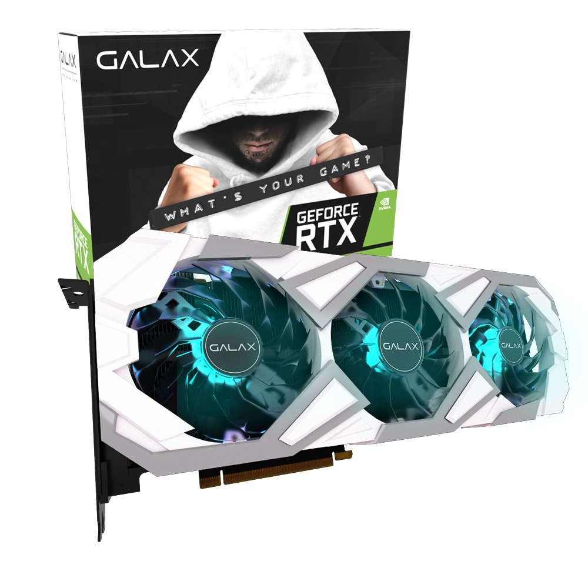
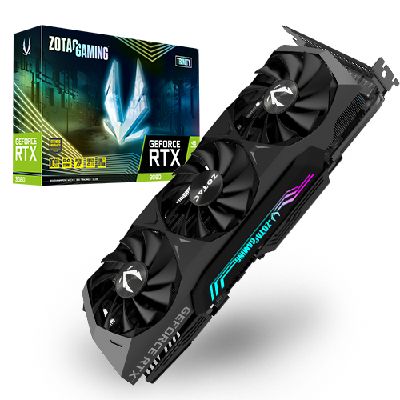

갤럭시 GALAX 지포스 RTX 3080 EX Gamer WHITE OC D6X 10GB
RTX 3080 / 8nm / 부스트클럭: 1755MHz / 스트림 프로세서: 8704개 / PCIe4.0x16 / GDDR6X(DDR6X) / 출력단자: HDMI2.1, DP1.4 / 부가기능: 제로팬(0-dB기술), 8K 해상도 지원, 4K 해상도 지원, HDR 지원 / 사용전력: 최대 340W / 정격파워 750W 이상 / 전원 포트: 8핀 x2개 / 전원부: 20페이즈 / 3개 팬 / 가로(길이): 316mm / 백플레이트 / LED 라이트 / Dr.MOS 모스펫 / XTREME TUNER / A/S 3년 / 그래픽카드 지지대 포함
ZOTAC GAMING 지포스 RTX 3080 Trinity D6X 10GB
RTX 3080 / 8nm / 부스트클럭: 1710MHz / 스트림 프로세서: 8704개 / PCIe4.0x16 / GDDR6X(DDR6X) / 출력단자: HDMI2.1, DP1.4 / 부가기능: 제로팬(0-dB기술), 8K 해상도 지원, 4K 해상도 지원, HDR 지원, HDCP 2.3 / 사용전력: 최대 320W / 정격파워 750W 이상 / 전원 포트: 8핀 x2개 / 3개 팬 / 가로(길이): 318mm / 백플레이트 / LED 라이트
